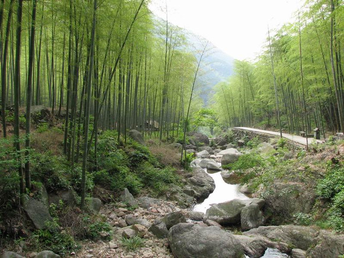

发信人: MrYang (our2008), 信区: outdoor
标 题: 召集！~野协清明七尖（东西天目山）穿越
发信站: 饮水思源 (2012年03月27日00:01:36 星期二)
如果你爱一个人，可以带ta去七尖；如果你恨一个人，送ta去七尖~~
归来天目居，心气得宽余。
园植数茎竹，池游几尾鱼？
闲来山水伴，静憩诗书娱。
唯念儿悄远，自然取悦愉。
野协2012-04-02/03/04七尖穿越
在杭州临安，七尖指从西天目到东天目穿越（或者反过来）需要翻过的山，有仙人顶（15
06米）——龙王山（1587米）——药王峰（1551米）——千亩峰（1554米）——桐杭岗（
1503米）——仰天坪（1248米）——大仙顶（1479米）；看云海、观林海、穿梭石林，行
程约为40-50公里，总上升高度约4000-5000米；两天穿越七尖号称为“华东第二虐”，为
降低难度，本次为三天穿越，但是强度仍然较大，请大家务必认真考虑，谨慎报名，我们
也会在报名后后进行一次训练选拔。
screen.width - 200){this.width = screen.width - 200}">
screen.width - 200){this.width = screen.width - 200}">
活动时间：4月1日晚到4月4日晚
具体行程：
第一天：4月1日
18：30，庙门集合，包车去临安西天目进山口；车上破冰，游戏，大家相互认识熟悉。24
：00左右到达向导家，打地铺睡觉。
第二天：4月2日
5：30起床，在向导家吃早餐 。
6：30开始沿开山老殿边防火线上山，8：00至第一尖西天目仙人顶，8：30沿仙人顶下防火
线向北进发，9：30防火线转进香小道，11：00穿过密竹林灌木从至龙王山防火线、下包冲
龙王山顶。11：30至第二尖龙王山顶。12：00龙王山顶返回下包处、上包沿防火线向下进
发，15：00翻过牛屎坡至第三尖药王峰顶，15：30翻过几个小悬崖、石林到千亩峰下山谷
、下包冲第四尖千亩峰。16：00返回下包处沿小路横切向千亩田，经过火山口沼泽地，16
：30至千亩田农家，住宿或扎营。
第三天：4月3号
6：00起床，煮姜汤，早餐（热）
7：00出发至千丈崖，然后沿水泥板路至深王公路终点龙王山停车场，8：00沿停车场边上
防火线向桐坑岗进发，8：40登顶第五尖桐坑岗。10：00下至防火线与公路交叉处（移动发
射塔），走几百米柏油路后转机耕路，11：00至深溪茅草山自然村，中餐。12：30至檀树
岗顶开始穿密竹林向仰天坪进发，13：30登顶第六尖仰天坪，然后下山，14：30到山谷水
杉林，15：00到告岭头林场护林，16:40到蓑衣塘扎营。
第四天：4月4号
5:00起床，姜汤，早餐（热）
6:00轻装蓑衣塘出发，过阳山坞岗、仙人台，（这段路全是密竹林灌木众）8：30登顶第七
尖东天目大仙顶。9:00下山，11:00返回营地。30分钟收拾。11:30开始下山，14:30到农家
FB。16:00坐包车回上海。
至此，功德圆满！
费用：
装备费55元（帐篷20，背包15，睡袋加防潮垫10，锅加炉头5，气罐5）自己有装备则退相
应费用
车费：158元
保险：10元
向导费用：35元
腐败费用：30元
总计288元每人，非会员308元每人
最终费用多退少补
发送姓名+性别+年级+学号+是否为会员+简要说明户外经历至：杨同学13482372621
报名截止时间：周三中午十二点（视报名人数可能会稍有改动，见谅！）
注意事项：
1.以上行程为基本行程，领队有权根据天气、队员状态等情况调整活动计划，不承担由此
造成的损失和责任。
2.野外活动不同于一般旅游，参加活动的队员须听从领队和向导的组织安排，严禁野外用
火吸烟，严禁擅自离队，所有活动安全第一，对于无视指挥所造成的后果由自己负责。
3.无论什么时候，一旦觉得事情应付不来，就要讲出来。艰难的路段最好请人帮助，甚至
放弃不爬，也比发生危急情况要好。
4.登山应发扬团队精神，途中留意同伴情况，危险地段互相提醒或协助通过。
5. 迷路时应折回原路，或寻找避难处静待救援；除保持体力外，并安抚队员平稳情绪。
6.提倡环保，注意保护环境，请将垃圾带离及小心用火，切勿乱丢烟蒂，引起山火。
7. 安全第一，切忌个人英雄主义，要量力而为，集体活动以大局为重，不搞个人主义，不
得单独行动。
8.请守时，对自己负责，对他人负责
screen.width - 200){this.width = screen.width - 200}">
 screen.width - 200){this.width = screen.width - 200}">
注：野协另外一条线“新安江”，报名的同学如果没有收到副领队的确认短信，可以给副
领队发信息。18817555778唐同学
--
※ 来源:·饮水思源 bbs.sjtu.edu.cn·[FROM: 59.78.15.90]
|